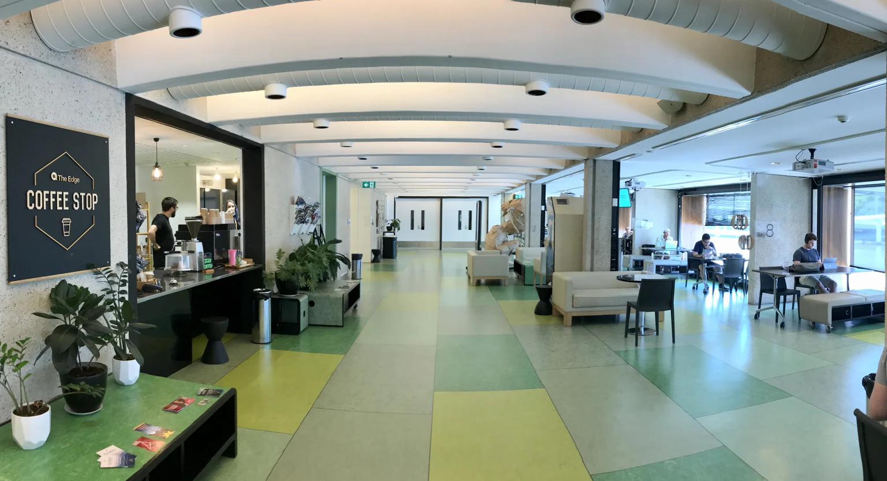

Exploring a civic establishment
Find your
next question.
A complete guide to the pages, tools, sources and developing ideas in this working exploration.
System in development · Brisbane · 8 November 2026
The Edge, State Library of Queensland, Brisbane, 13 January 2018. Photograph by Kgbo, CC BY-SA 4.0. A local shared-space reference, separate from the candidate building.
Image credit ↗The complete route
Choose the next useful question.
Move through the place, the possible overlaps, the calculators and the source library. Every public page is linked from the main navigation and this directory.
01The exploration02The building0324/7 shared use04Programme overlaps05Capacity calculators06Costs and resources07Workforce and teaching08Resilience and contribution09KYC questions10People and portfolios11Build a site brief12Developing connections13Sources and assumptions14Style guide15Images and provenance16Licence and rights17Site map